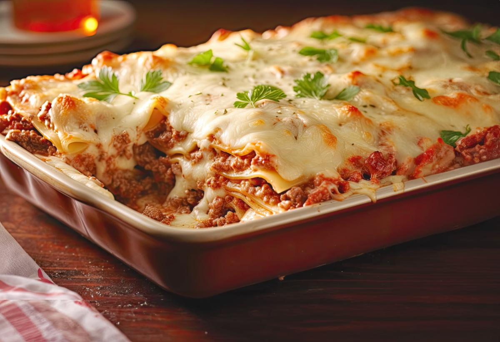

Lasagna

Für die perfekte Lasagne:
Man braucht eine saftige Bolognese eine cremige Bechamelsauce und Lasagneplatten.
Für die Bolognese:
- Olivenöl
- Hack
- Tomaten
- Zwiebeln
- Rotwein
Für die Bechamel:
und Lasagneplatten..
Bolognese:
- Olivenöl in eine Pfanne. Hack und Zwiebeln dazugeben.
- wenn durch, mit Rotwein ablöschen und Tomaten hinzugeben.
- min. halbe Stunde köcheln lassen.
Bechamel:
- Butter schmelzen in kleinem Topf.
- unter rühren Mehl hinzugeben bis hellgelb.
- langsam Milch unterrühren.
Zubereitung:
- Bolognese und Bechamelsauce vorbereiten
- Abwechselnd Bolognese, Bechamel und Lasagneplatten schichten. Mit Bolognese als oberste Schicht.
- Käse drüber und in den Ofen.